路上三日，洪湖两日——一个湖北人的返乡探亲日记
原文链接 备份链接 _ 编者按：这是海螺收到的第三篇投稿。作者一帆在对湖北省内病毒扩散毫不知情的情况下踏上返乡探亲之旅，因为当时媒体都还只是提到武汉，而她从广州回洪湖的自驾并不必经武汉，所以大家都以为没关系。即使到达洪湖之后，在当地也没有 …


从武汉“封城”的那一天起，我们的生活便开始以“14天”为单位计算。
而武汉这座城市，也一直在人们视线聚焦的最中心。
除夕夜，春晚舞台上唯一没彩排过的节目里，喊出了第一声“武汉加油”；
大年初一，全国多支医疗队赴援武汉；
27日晚8点，全武汉的市民自发在窗边唱起《我和我的祖国》；
28日，钟南山院士在采访时含泪感概：“武汉本来就是一个英雄的城市”；
……
2月2日，火神山正式交付，2月3日正式收治病人；
2月5日，雷神山投用；
2月7日凌晨，李文亮医生在武汉市中心医院去世。
武汉人在关注和帮助下，蹒跚走过“第一个14天”，在武汉的900万人知道，这14天，我们走得多不容易。2月7日，中国医疗界的“四大天团“在武汉会师，在“第二个14天”里，武汉无疑仍是焦点。
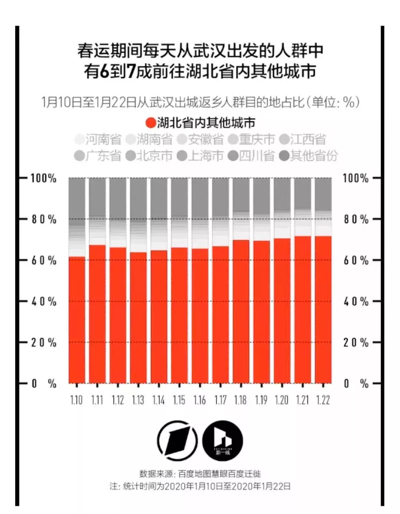
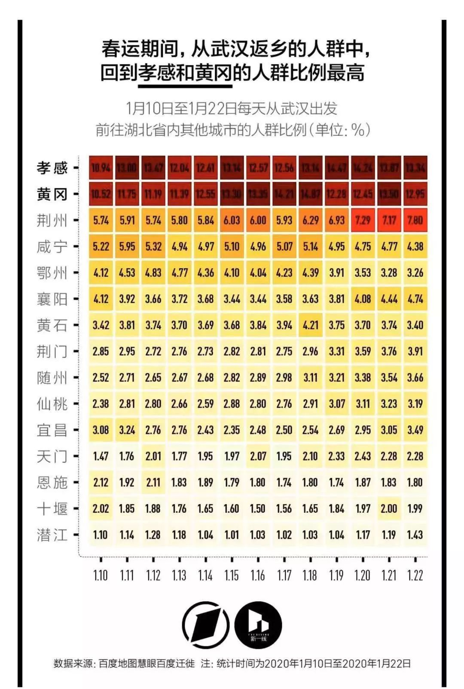
数据表明：离开武汉的500多万人中，有近半数回到了武汉周边城市。
但与此同时，大家可能忽略了，这14天同样走得艰难的，还有300多万离开武汉，回到武汉周边的“新武汉人”。平时，他们在我们身边，工作学习、成家立业，和我们一起建设武汉。
现在，他们在哪里？这14天，过得还好吗？
元宵节，“第二个14天”开始的第二天。黄星洋从村里的敲锣人那里得知，隔壁湾子里的一个小姑娘没了，就二十来岁。同一天，黄星洋的爸爸，统计完了每家每户需要的物资，交由村委会统一采购。
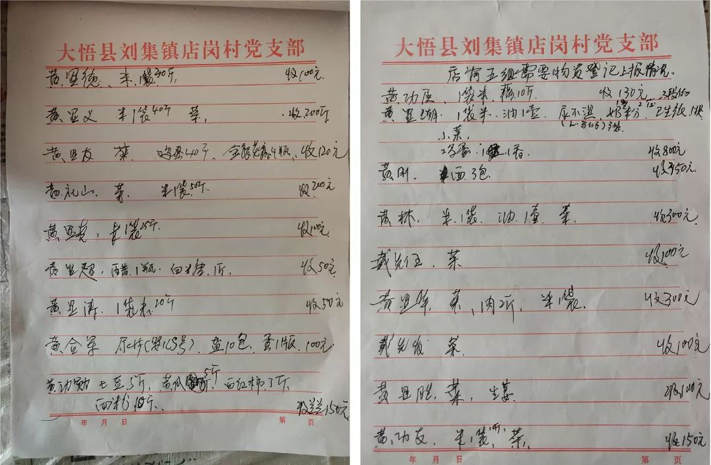
元宵节当天，村委会第一次统计村民所需物资
因为父母常年在老家，家里有粮食储备，自家还种了些菜，黄星洋家受封路的影响还不大。“但有的是外地回来的，根本没买很多口粮。卖菜的差不多都不营业了，守路人也不轻易让人出去，我不知道那些没口粮的人能撑多久，他们吃的有多寒酸。”
湾子里的一家小店还在卖菜，虽然蔬菜已经蔫了，还是有人去买。“也不知道它还会开多久。好在村委会开始统计物资需求了。”
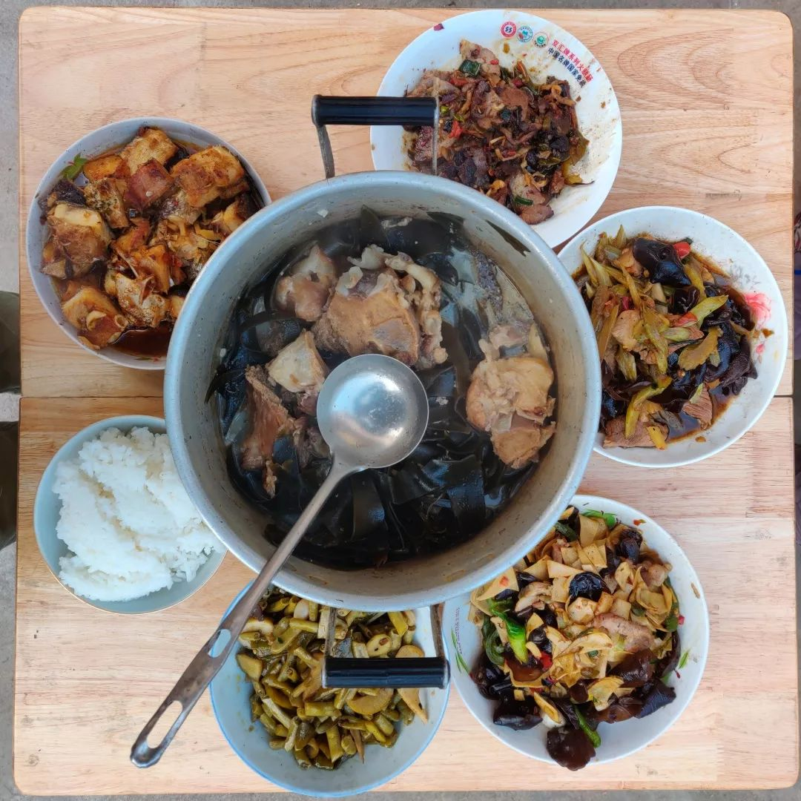
黄星洋家的物资储备算十分充足的了
黄星洋所在的湾子直到大年初三才开始封路，通往镇上的主路，连通隔壁湾子的路都被拦断。
大石块、 拦腰砍断的树、土堆……曾被用作铺路的材料都变成了拦路的工具。进出湾子的路口，值班人守着路，敲锣人喊着“冇事莫出门，出门戴口罩”，一个湾子一个湾子的穿梭，宣传。
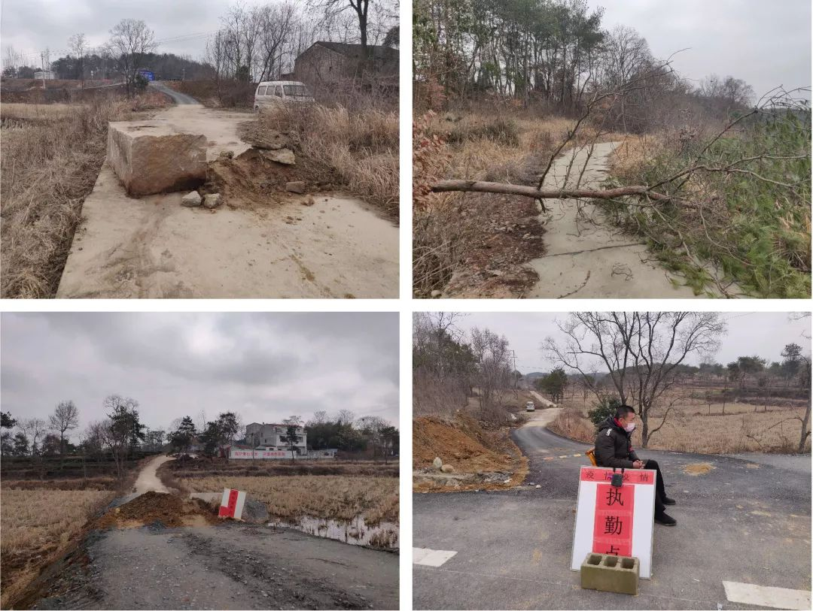
湾子的不同出口都设有“关卡”
严密的“封锁”举措，每天有人上门测量体温……虽然黄星洋所在的湾子，在第一个14天过去后没有确诊和疑似病例出现，但大家都很警觉。“毕竟人命关天，隔壁湾都有确诊的，能不重视吗？”
街坊邻居不再串门，往年大规模打牌的场景没有了，在家门口活动遇到熟人，都保持着8米开外的距离简单问候，然后各回各家。没有年味的村落，现在反倒令人心安。

因为口罩有限，短暂外出的村民靠保持距离保证安全
第一个14天过完了，年也过完了。黄星洋不会因为长辈要去亲戚家串门的事情红脸，他更担心的是武汉的情况，“小区也封闭了那大家怎么采购物资？不能跨区收治，能保证所有患者都能被收治吗？”
从朋友圈了解到身边的亲友暂时平安，在抖音上看不到他想要的“真相”，黄星洋重新刷起微博来，试图离“真相”近一点。大量的求助信、未被收入医院的人……看到医院护士哀哭的视频，近而立之年的黄星洋哭了。
“种种情况都表明，武汉的情况还是很不好，而且短时间内，可能不会好起来。”

1月19日，皮皮和老公的100多位亲友，从哈尔滨、广州、武汉等地赶到黄冈，参加完皮皮的婚礼后，又各自返回家乡。当所有亲友结束旅程，打开家中电视看新闻时，在武汉爆发的“可防可控”“有限人传人”的新冠肺炎，出现了“人传人”的现象，并有“15名医护人员感染”。
“现在想想，还是后怕。好在来过的亲友里，没有感染的人。”在得知疫情可能比想象中更早扩散，并且更严重时，刚结束不久的婚礼，成了皮皮担忧的事。当地的疫情和政府的相关举措，成了皮皮格外关注的事情。
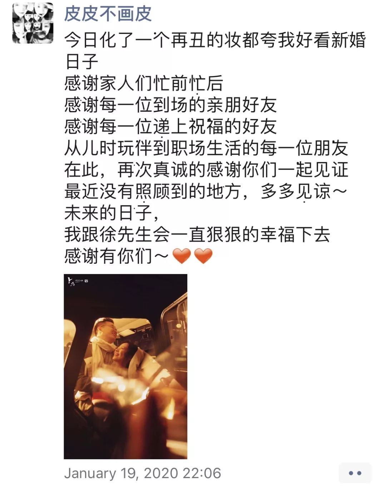
皮皮在婚礼当晚，发朋友圈感谢了到场的亲友
黄冈，距离武汉75公里，是湖北省内疫情严重程度仅次于武汉的城市。70万从武汉返乡的人群，让黄冈这个经济欠发达的地区有了“最有可能成为第二个武汉”的风险。
1月29日，“绝不能让黄冈成为第二个武汉！”的口号，让和皮皮一样的黄冈人看到了希望。但第二天，在电视上“一问三不知”的卫建委主任，又让这句口号在黄冈人心中变成了问号。
来不及深究卫建委主任为何会做出如此反应，皮皮很快就关注到了黄冈市快速上涨的确诊病例数量。“这个时候的数据，我感觉才是真实的。因为据我所知，黄梅县每天都有二三十例的新增确诊病例。”
2月1日24时，黄冈新增确诊病例276例，累计确诊病例1002例（数据来源：澎湃新闻），成为继武汉之后第二个确诊病例破千的城市。
“第一个14天”结束时，皮皮已经在线上复工。此时还在小池镇上的她，既是新婚的新娘，也是在小池镇关注着疫情的普通黄冈人。当日子还没按14天为一个阶段开始计算时，皮皮和好友许下过“暴富”的心愿，“不加班”也能让他们满足。在“第一个14天”开始后，“积极健康地活着”成了他们最大的心愿。
“过好第二个14天，更为重要。如果没有度过（难关），后面还会有N个14天。这种不确定性，让人害怕。”
1月11日，回到洪湖近一周的橙子，看到了天上又大又圆、即将满月的月亮。半个月后，除夕，新月。凌晨三点，橙子躺在床上，因为担心一线医护人员而辗转难眠。
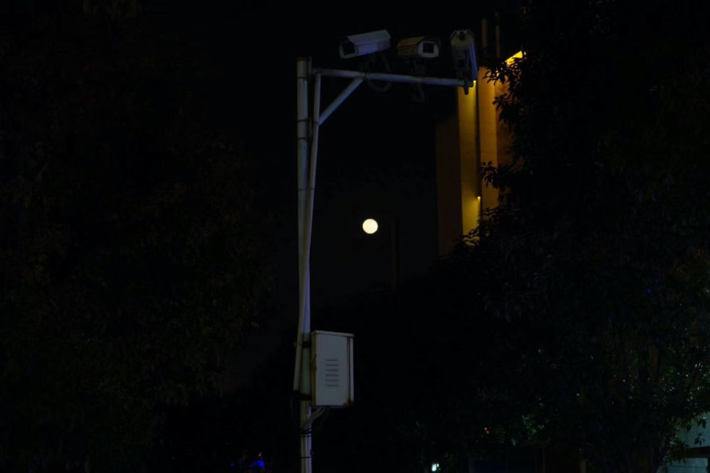
橙子1月11日的朋友圈：“你看着月亮它又大又圆”
1月23日，抗“疫”的“第一个14天”开始了。橙子的高中同学建了一个微信群，取名“惜命青年保平安”。此时的“平安”二字，对于群里的11个年轻气盛的00后来说，比自由更可贵。疫情，也成为他们每天关注的焦点。
医护人员的鼻梁脸颊被口罩磨破的照片、一线工作者被感染的消息、不断增长的确诊和疑似病例……闭上眼，这些画面和数字就开始在脑海里浮现。没有了以往热闹，夜里的洪湖格外安静，橙子内心那些担忧、焦躁的声音却最大。
“我怕得睡不着”
“我不睡了我真的无法入睡了……”
“可怜、弱小、无助（表情包）”
……
2月6日，“第一个14天”结束。从29日开始，就只在白天分享生活日常，很少在晚上发朋友圈的橙子，在晚上10点多，转发了《洪湖加油》——一条由2个洪湖青年制作完成的视频——到朋友圈。
《洪湖加油》拍摄制作：刘成杰 王宇豪
“以往回家的必经之路没有了车辆行人，”视频里的洪湖“陷入了深度寂静”。早上的玉沙路上没有了排队买豆皮的人，傍晚的荷花广场没了结对跳广场舞的阿姨们……
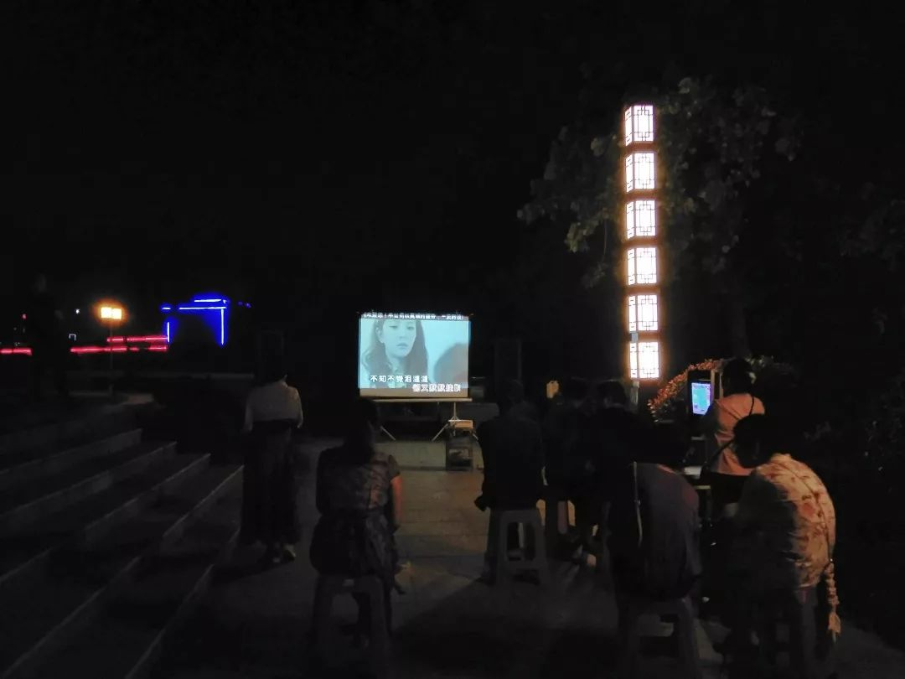
橙子拍摄的洪湖江滩公园的露天KTV
但在两位洪湖青年看来，“这种寂静也代表着洪湖力量”。医护人员守在前线，当地志愿者们定点帮扶，交警坚守道路关卡，广西南宁驰援洪湖200余吨果蔬，还包括3.1万盒广西特产螺狮粉……


图片截取自《洪湖加油》短片
2月7日，“第二个14天”开始的第一天，洪湖版“小汤山”开始收治患者。洪湖新增确诊病例2例，是这15天来，新增病例最少的一天。
那天夜里的洪湖依旧安静，橙子的内心也少了焦躁。
“给你们看我的工作台！我就是从广州东塔回乡的Zoe”，被困天门的抽抽，在第一个14天开始的1月23日，投奔进了天门设下的“天罗地网”里，原以为和广州是匆匆一别，结果一困，就是二十多天。

抽抽每天在这个办公桌前和广州的同事开会
每年都回天门过年的抽抽，原计划陪长辈吃过年夜饭就坐火车回广州。结果大年三十的下午，天门也封城了，买了初一返穗车票的抽抽，连村都出不去。
住在50年前盖的老房子里，室内没有厕所，只有户外的露天茅厕。没有淋浴，只有大澡盆，房子四处漏风，甚至有些屋顶还会漏雨。“最大的困难就是寒冷，空气是冷的，身体是冷的，键盘也是冷的，网络也不好。”从初三开始就有工作任务的抽抽，很难坐下安心工作，工作效率只有平常的1/5。
“领导在群里push我们签约，而我来月经连澡都洗不了，卫生巾去哪买也不知道！一套衣服穿了十几天都没换……”刚到天门的前几天，因为咳嗽了几声，抽抽被隔离到了更偏僻的房子里。面对着一片荒地打开电脑，抽抽收到了次日线上开工的通知。
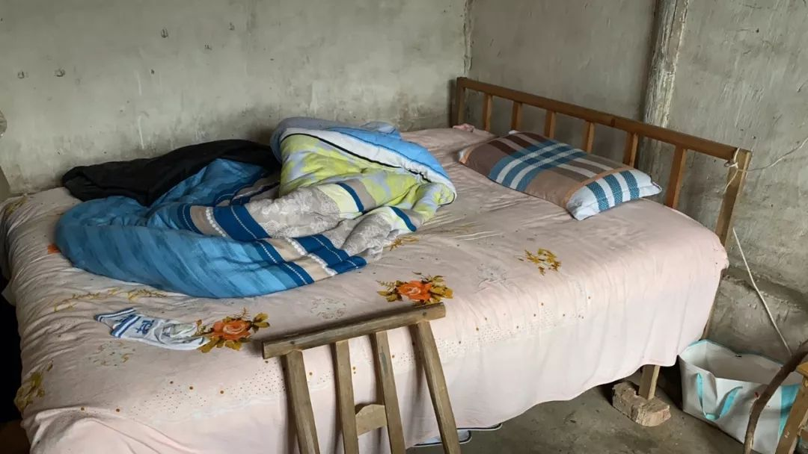

抽抽的床和办公桌旁的火盆
平常生活就很简单的抽抽，对物质要求并不高。困在村里的她，也只是想洗个热水澡，换掉穿了十多天的衣服，踏踏实实地工作。
“第一个14天”里的抽抽，不止一次发出“我真的好想回城里”的感慨。如果这是一出“变形记”，抽抽经历的够多了。还能抽上烟，是她为数不多的快乐。
“第二个14天”开始，从镇上给抽抽一家送食物的大舅，也被困在了村里，连换洗的衣服都没带。村里的隔离越来越严，抽抽却越来越淡定。
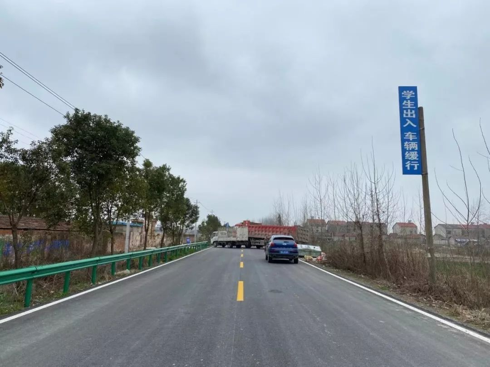
困了20多天，抽抽第一次走到村口。
“前天出太阳，我去姨妈家洗了个澡，回来以后喝了一杯可乐。超级开心！”工作上依然有很多困难，但此时的抽抽会选择出门去田间走走，“捡捡柴火，跟着舅妈去田里偷点菜。我现在可会生火啦！”
抽抽的“变形记”还在天门进行，虽然不知道还会继续多久，但她很少再向朋友抱怨村里生活的不便。“前几天村长来卖鸡蛋了，5毛一个。我们买了60个！”
本来欲望就低的抽抽，快乐阈值变得更低了。
第二个14天已经开始，Didi第二次产检的日子过去的越来越久。但现在的她，还是连门都不敢出。
1月7日，怀孕三个月的Didi，去医院做第一次产检时，已经戴起了口罩。“12月底，我从朋友那里得知，武汉已经有44个左右的感染者了。”虽不能确定消息的真实性，但对朋友的信任，和对宝宝的保护，让初为人母的Didi还是警觉了起来。她提醒老公出门戴口罩，并囤了一些口罩。
一个月前的“小道消息”被实锤，疫情在往超过预想的方向发展着。怀着孩子的Didi始终不敢相信，这一切是真实发生在自己身上的。“我怀着宝宝，为什么就让我们碰上了呢？这明明是电影里才会有的场景，竟然在现实生活中遇到。”
“不串门，不舞龙舞狮……”窗外的大喇叭全体滚动播放着疫情相关的警示口号，街上空无一人，静得出奇。透过窗户看到的外面，Didi总觉得不真实。
特别不喜欢宅在家里的Didi，总是喜欢到处走走看看，“哪怕换一个房间把我隔离都好，就是不要让我在一个地方呆太久。”不能出门的Didi，用看电影的方式，把自己放在不同的世界里。
《传染病》《流感》……和这次疫情相似的电影，Didi都看了一遍。在现实生活中真实体验过电影里的种种后，Didi还是选择一遍遍的复习动画里的美好。“我以后应该不会和孩子讲我此时经历的疫情，我希望给讲美好的东西。毕竟这个世界上，还是美好比较多。”
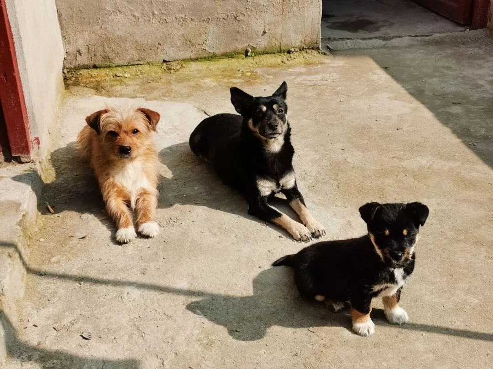
Didi新结识的三个新朋友：吉米、黑妞、黑宝
尽管物资采买没那么便利，但餐桌上总有Didi爱吃的菜。三只分别叫吉米、黑妞、黑宝的小狗成了Didi新的插画主角，老公也从没陪伴在身边这么久……一窗之隔，里外都是真实世界，Didi希望窗外的时间流走，眼前的时间留下。
“我是个恋家的人，在武汉都会每半个月要回一次同在黄石的家，和妈妈两三天就要视频一次。”第二个14天已经开始，Didi想回家了，想和妈妈像以往一样聊工作、聊生活，分享画的画。
“想过回正常的生活。”这是当下Didi最朴素的愿望。

Didi习惯将自己画的画分享给妈妈
1月23日10时，仙桃和武汉同步“封城”。1月19日就回到老家仙桃的刘老师，见证了仙桃是如何一步步地被“隔离”的。
仙桃“封城”的当天，市内街道上的红绿灯全部亮起了红灯，小区和小区之间的道路上，也有车辆拦截。再后来，“本户有武汉返乡的成员，请勿来往”的封条越来越多的出现在一些人家的门口。与“风暴中心“的频繁交流，使得仙桃保持着极高的警觉性。
人口流出量高达40.35万人（2017年数据）的仙桃，每家每户都有和刘老师情况相似的人在外地务工、上学。距离100多公里、开车不到2小时的武汉成了许多仙桃人的第二故乡，巨大的人口流动在两城之间发生。
因为疫情的发生，仙桃和武汉的地面连接被阻断，但两地的往来没有被切断。

陆运不行，空运顶上。2月1日下午5点37分，载着3000多套防护服和2.4万余只医用口罩的直升机降落在新华路体育馆。3天后的中午12点半，装着3万只口罩的直升机再次从仙桃机场起飞。
同样的“空中联结”，也在刘老师和31个武汉家庭中发生：线上询问孩子和家长的健康状况，录制亲子游戏视频、绘本故事分享到微信群中。屏幕里的可爱孩子们，让刘老师迫不及待想回到武汉，开始工作。
线上教学的第一天，也是刘老师想上班的第一天
—
“第一个14天”已经结束，“第二个14天”已经开始。
在过去的二十多天里，除湖北外省份确诊病例数连续7日下降。但湖北省内的确诊和新增疑似病例仍在波动中增加。
湖北人共同面临的，是一场“持久战疫”。武汉不是唯一战场，战疫也不只发生在医院里。每一个拼尽全力维持正常生活的平凡湖北人，都是坚守防线的战士。
把每一个14天都过好，不容易。但过过去，我们就赢了。
text | 家乐福海盗
photo | 受访者提供
💬
# 你在哪里？你还好吗？#


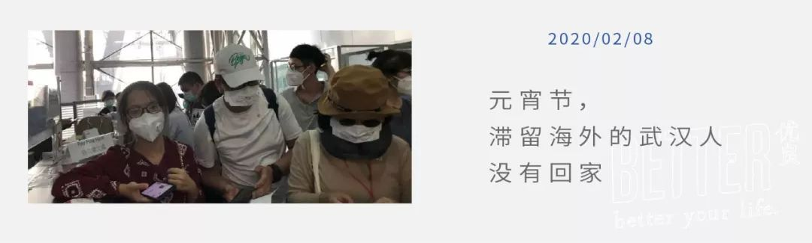

原文链接 备份链接 _ 编者按：这是海螺收到的第三篇投稿。作者一帆在对湖北省内病毒扩散毫不知情的情况下踏上返乡探亲之旅，因为当时媒体都还只是提到武汉，而她从广州回洪湖的自驾并不必经武汉，所以大家都以为没关系。即使到达洪湖之后，在当地也没有 …
原文链接 备份链接 摘要：这是24岁的曾真记忆中最冷清的一个新年，也是家族微信群最活跃的一个除夕夜。老老少少在群里发红包、抢红包，仿佛云社交真的可以打破这个春节的寂寥。然而抢完红包，群回归死寂，偶尔有消息弹出，一定是关于新型冠状病毒肺炎。 …
原文链接 备份链接 文 | 三明治016 车子缓缓驶近村口。 一根彩带揉搓成的细长绳子，挂在门口两个石狮子上，挡住了进村的路。 因为新型冠状病毒影响，正月初七这天，往年返京最高峰的日子，北京多个村庄、多个社区却相继曝出拒绝租客进门的规 …
原文链接 备份链接 各方资源和关注的焦点是武汉，但在周边16座也因疫情而被封闭的城市里，他们正在经历着什么 文 |《财经》记者 房宫一柳 宋玮 黎诗韵 管艺雯 陈晶 余洋洋 实习生 马可欣 张凡 编辑 | 宋玮 1月24日，农历鼠年除夕 …
原文链接 备份链接 难以确诊的病人：排10小时才能打上针丨武汉肺炎亲历 2020-01-25 21:10 作者：王迎春 来源：中国经营网 本报记者 王迎春 武汉报道 在自己已经走过的生命中，张林（化名）从来没有像现在这样，期望从医院那里， …